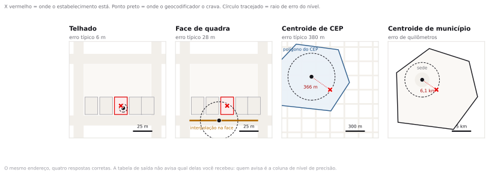
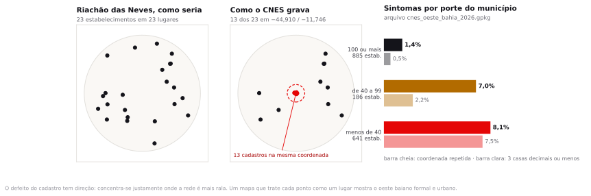
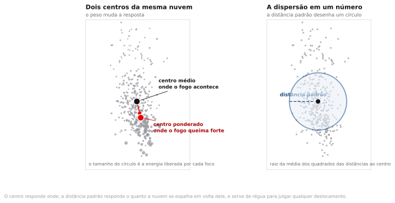
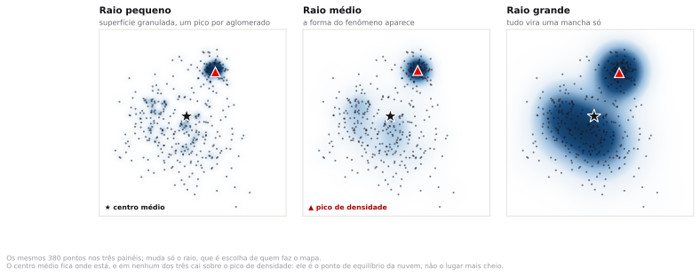
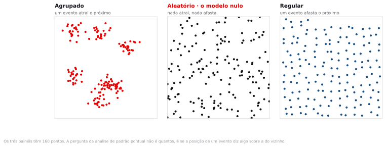

Preparação e download
A leitura do tema era a nota metodológica do INPE sobre o satélite de referência do Programa Queimadas. São quatro páginas. Se você não leu, leia enquanto a turma se organiza.
- tema07_cerrado_bahia.gpkg Um GeoPackage com três camadas —oficial
focos_aqua,cnesemunicipios— todas já emEPSG:31983, que é o fuso 23 em metros. A seção seguinte explica o que há dentro de cada uma.
Uma secretaria estadual manda a você uma planilha com 1.712 endereços de estabelecimentos de saúde e pede um mapa que mostre onde a rede está concentrada. Você geocodifica, plota e a mancha aparece. Quanto dessa mancha é a rede, e quanto é o geocodificador?
Do endereço ao ponto, e do ponto a um número
De onde vêm os dados
Antes de medir qualquer coisa, saiba o que cada linha do arquivo representa. Boa parte dos erros de análise espacial não está na conta: está em achar que a linha significa uma coisa quando ela significa outra.
Os focos de calor
Um foco de calor não é um incêndio. É um pixel de imagem de satélite em que o sensor detectou temperatura acima do esperado para aquele lugar e aquela hora. O pixel do sensor que usamos tem cerca de um quilômetro de lado, então um foco é um quadrado de 1 km² onde alguma coisa estava quente. Um incêndio grande ocupa vários pixels e vira vários focos; uma queimada pequena dentro de um pixel vira um foco só; um incêndio embaixo de nuvem não vira foco nenhum.
O INPE processa essas detecções desde 1998 e publica no Programa Queimadas, com atualização a cada poucas horas. O arquivo bruto para o nosso recorte traz dezesseis sensores diferentes e 212.160 registros. Um incêndio que dura seis horas aparece como foco no NOAA-20 de manhã, no AQUA à tarde e no GOES-16 a cada dez minutos: somar tudo conta o mesmo fogo dezenas de vezes.
Satélite de referência
Para que a série seja comparável ao longo dos anos, o INPE escolhe um único sensor e publica a série histórica só com ele: o AQUA_M-T, que passa no início da tarde, horário de pico da queima. Todo número de foco divulgado como série temporal vem dele. No nosso recorte, 212.160 detecções brutas viram 5.907 focos de referência — uma razão de 36 vezes. Duas manchetes, uma dizendo "noventa mil focos" e outra "dois mil e setecentos", podem estar as duas certas sobre o mesmo território e o mesmo ano.
A camada focos_aqua tem 5.907 linhas, 3.218 de 2023 e 2.689 de 2024, de junho a novembro, que é a estação seca do Cerrado. Setembro sozinho responde por 2.177 delas. As colunas que importam hoje:
| Coluna | O que é | O que observar |
|---|---|---|
ano, mes, data | Quando a detecção aconteceu | Só 2023 e 2024, meses 6 a 11 |
municipio | Município em que o pixel caiu | 37 municípios |
frp | Potência radiativa do fogo em megawatts, a energia que o foco estava irradiando no instante da passagem do satélite | Mediana 45,0 MW e média 102,0: distribuição de cauda longa, com máximo de 3.718,3 |
dias_sem_chuva | Dias desde a última chuva registrada naquele ponto | Mediana 44. O valor para em 120: 619 focos estão nesse teto e podem ter muito mais |
risco_fogo | Índice do INPE de 0 a 1 para a chance de fogo naquele dia | Satura: 5.296 dos 5.907 valem exatamente 1. E 22 valem −999, que é o código de dado ausente |
Calcular a média de risco_fogo sem olhar os valores. Os 22 registros com −999 puxam a média de 0,94 para 0,77, e nada na tela avisa. Código numérico para dado ausente é convenção antiga e ainda corrente em dado ambiental brasileiro; o primeiro gesto ao abrir uma coluna nova é pedir o mínimo e o máximo dela.
Os estabelecimentos de saúde
O CNES, Cadastro Nacional de Estabelecimentos de Saúde, é o registro obrigatório de toda unidade que presta serviço de saúde no país, pública ou privada: hospital, unidade básica, laboratório, consultório, farmácia de alto custo. É mantido pelo DATASUS e atualizado mensalmente pelos próprios gestores municipais, que preenchem o cadastro — inclusive a latitude e a longitude.
Essa última frase é a aula inteira. A coordenada não é medida por ninguém com equipamento: ela é declarada por quem preenche o formulário, e o cadastro não guarda nenhum campo dizendo como ela foi obtida. São 1.712 estabelecimentos ativos em 36 municípios. A camada que você recebeu tem 1.660 pontos, e a diferença está explicada na seção "Onde o erro se concentra".
| Coluna | O que é |
|---|---|
cnes, nome_fantasia | Código nacional e nome do estabelecimento |
municipio, tp_unidade | Município e o código do tipo de unidade, de dois dígitos |
n_unidades | Quantos estabelecimentos aquele ponto representa. Vale 1 em 1.635 dos pontos e chega a 13 em um deles. Foi calculada por nós, não vem do CNES |
A malha municipal
Os 46 polígonos de municipios vêm das malhas territoriais do IBGE, na qualidade intermediária, e servem de pano de fundo. Eles não entram em conta nenhuma hoje, mas sem eles os pontos ficam boiando no vazio e ninguém reconhece o território.
Quatro coisas. Dos 212.160 focos de todos os satélites ficaram os 5.907 do AQUA_M-T. As três camadas foram reprojetadas de EPSG:4674 para EPSG:31983, porque média de coordenada em graus é média de ângulo e não dá um centro. Os estabelecimentos que dividiam a mesma coordenada foram reunidos em um ponto só, com a contagem guardada em n_unidades. E foi conferido que nenhum registro ficou sem geometria. Nenhum valor de atributo foi alterado e nenhum estabelecimento foi descartado: os 1.712 continuam todos representados.
Geocodificação é uma inferência
Geocodificar é converter uma cadeia de texto em um par de coordenadas. A cadeia é algo como "Av. Getúlio Vargas, 1250, Centro, Bom Jesus, PI". A saída é um ponto. Entre a entrada e a saída existe um casamento aproximado contra uma base de referência, e esse casamento tem qualidade variável.
O erro mais comum de quem começa é tratar o resultado como uma conversão exata, do tipo que transforma metro em pé. É uma inferência, com margem de erro que depende do nível em que o casamento foi possível.

Nível de precisão da geocodificação
É a informação que diz qual objeto foi usado para atribuir a coordenada. Do mais preciso para o menos: o telhado ou o centroide do lote; a interpolação na face de quadra, que estima a posição do número dentro do trecho de rua; o centroide do CEP; e o centroide do município. Toda API de geocodificação séria devolve esse campo. Quem descarta essa coluna perde a única informação que permite auditar o mapa depois.
A interpolação na face de quadra é o nível mais frequente em cidade brasileira média e o menos compreendido. O geocodificador sabe que a Rua X, no trecho entre a Rua A e a Rua B, contém os números de 100 a 298. Recebe o número 172 e supõe distribuição uniforme ao longo do trecho, colocando o ponto a 36% do comprimento. Se o quarteirão tem um terreno baldio de cem metros no meio, a suposição falha e o ponto cai na casa errada. Erro típico de algumas dezenas de metros, o suficiente para trocar o setor censitário em área urbana densa.
A taxa de match, a proporção de endereços que o serviço conseguiu resolver, é o primeiro número que o fornecedor apresenta e costuma ser o único. Uma taxa de 96% soa excelente para quem não faz a conta seguinte: match não é estado binário. Um serviço pode declarar 96% e ter resolvido metade dos casos no centroide do município. No relatório, foram 96%. No mapa, metade dos pontos está empilhada sobre um punhado de praças de matriz.
Se o erro de geocodificação é de trinta metros, ele importa para qual análise?
Depende do tamanho da unidade de análise. Para somar estabelecimentos por município, trinta metros nunca muda nada. Para contar por setor censitário, muda em toda quadra de borda. Para dizer se o ponto está dentro ou fora de um raio de 300 metros de uma estação, muda em todo caso que cai perto da borda. A regra prática: o erro posicional importa quando é da mesma ordem de grandeza da menor feição da análise.
Onde o erro se concentra
Endereços que falham na geocodificação não falham ao acaso. A falha se concentra onde o logradouro não tem nome oficial ou onde a base de referência está desatualizada, ou seja, em ocupação informal e em município pequeno.
Como o CNES não publica o nível de precisão de cada coordenada, não há a coluna que auditaria o cadastro e é preciso procurar o sintoma. O sintoma é a coordenada repetida: 77 estabelecimentos dividem 25 coordenadas, e a maior pilha tem treze. Em Riachão das Neves, treze dos vinte e três estabelecimentos aparecem todos no mesmo ponto, com bairro registrado como zona rural. Em Barreiras, com 335 estabelecimentos, são três. Ninguém foi a campo com GPS em Riachão das Neves: alguém digitou o ponto da sede e replicou.
| Porte do município | Municípios | Estabelecimentos | Em coordenada repetida |
|---|---|---|---|
| 100 ou mais estabelecimentos | 4 | 885 | 1,4% |
| de 40 a 99 | 3 | 186 | 7,0% |
| menos de 40 | 29 | 641 | 8,1% |

Se você tratar cada ponto como posição real, o mapa mostra uma rede de saúde concentrada em Barreiras e em Luís Eduardo Magalhães. A rede é concentrada de fato: os quatro municípios grandes têm 52% dos estabelecimentos. Mas não tanto quanto o mapa afirma, porque a rede difusa dos 29 municípios pequenos aparece colapsada em pilhas sobre as sedes. Uma política de expansão desenhada sobre esse mapa reforça os municípios grandes, que é onde o cadastro é bom, e subestima a demanda dos pequenos, que é onde a rede é mais rala e o cadastro, pior.
Porque o mapa de densidade que você faz no passo 5 derreteria com as pilhas. Treze cadastros sobre a mesma coordenada viram um pico treze vezes mais alto que o do vizinho, e o mapa passa a mostrar a geografia do cadastro em vez da geografia da rede. A saída não é apagar os registros: os 77 foram reunidos nos 25 pontos que de fato existem, e a contagem foi guardada em n_unidades. Assim o ponto conta como treze onde deve contar como treze, e o pico volta ao tamanho certo. O passo 6 usa essa coluna como peso.
Quando o ponto deixa de ser dado e passa a ser pessoa
A LGPD, Lei 13.709/2018, define dado pessoal como informação relacionada a pessoa natural identificada ou identificável. A coordenada de uma residência, sozinha, costuma bastar para identificar quem mora nela. Um ponto de estabelecimento de saúde não é dado pessoal. Um ponto de residência de paciente é, e quando o dado descreve condição de saúde ele é dado pessoal sensível, com regime mais restrito. Agregar por setor censitário ou por hexágono é o que separa uma análise publicável de um vazamento.
Um mapa de pontos de residência de pacientes com determinada doença, publicado em escala municipal, é dado anonimizado?
Em município de 12 mil habitantes, provavelmente não: a coordenada da casa mais o diagnóstico bastam para identificar. Em capital, com centenas de casos na mesma quadra, a resposta muda. O critério não é o formato do arquivo, é a possibilidade concreta de reidentificação. E o deslocamento aleatório dos pontos não resolve sozinho, porque a mediana do deslocamento continua indicando a posição verdadeira quando há repetição de casos.
Centro médio e centro ponderado
A centrografia é a estatística descritiva do ponto: média e desvio padrão transportados para duas dimensões. O nome é antigo, do começo do século XX, e a conta cabe em uma planilha. A dificuldade está em escolher qual medida responde à sua pergunta.
Centro médio
É o ponto cujas coordenadas são a média aritmética das coordenadas dos eventos: soma todos os x, divide pelo total, e o mesmo para y. Tem a mesma propriedade da média em uma dimensão, inclusive a sensibilidade a valor extremo: um foco isolado a 400 quilômetros do restante puxa o centro médio na direção dele.
Centro médio ponderado
É a mesma média, com peso. O peso muda a pergunta que está sendo feita. Sem peso, cada foco conta igual e o centro responde onde o fogo acontece. Com peso pela potência radiativa, cada foco conta pelo tanto de energia que liberou e o centro responde onde o fogo queima forte. São perguntas diferentes, e no passo 3 as respostas ficam a vinte e nove quilômetros uma da outra.

Um centro sozinho não se interpreta, porque não há como saber se vinte e dois quilômetros é muito ou pouco. Falta a escala da própria nuvem.
Distância padrão
É a raiz da média dos quadrados das distâncias de cada evento ao centro médio. É o desvio padrão em duas dimensões: sai em metros e desenha um círculo em volta do centro. Serve de régua. Um deslocamento de 23 km entre dois centros parece grande até você notar que a nuvem toda se espalha por 144 km em volta deles.
O centro médio de uma nuvem de pontos precisa cair sobre algum ponto observado?
Não, e em geral não cai. O centro médio dos focos de 2024 cai em Riachão das Neves, a 3,2 km do foco mais próximo, sobre uma área que não queimou. É uma síntese estatística, não um lugar. Confundir as duas coisas produz frases como "o epicentro das queimadas é Riachão das Neves", que é erro de interpretação, não de cálculo.
A superfície de densidade
O centro médio resume a nuvem inteira em um ponto, e um ponto não tem como mostrar que existem dois aglomerados separados, ou um vazio no meio. Para isso serve a outra ferramenta de hoje, que faz o movimento oposto: em vez de reduzir a nuvem a um ponto, espalha a nuvem sobre uma superfície contínua.
Estimativa de densidade por kernel
Troque cada ponto por um montinho de altura decrescente, que vale o máximo bem em cima do ponto e chega a zero a uma distância fixa, chamada raio ou largura de banda. Some todos os montinhos. O resultado é uma superfície contínua, gravada como imagem: onde os pontos se amontoam os montinhos se empilham e a superfície sobe; onde há um ponto isolado ela mal se levanta. É o que todo mundo chama de mapa de calor, ou KDE, de kernel density estimation.
O raio não vem do dado. É escolha de quem faz o mapa, do mesmo tipo que o raio de 600 metros do tema 5, e muda o resultado o quanto quiser: pequeno demais, a superfície vira uma coleção de espinhos, um por aglomerado; grande demais, tudo vira uma mancha só e some qualquer estrutura. A honestidade mínima é declarar o raio junto com o mapa, do mesmo jeito que se declara o CRS.

Essa diferença entre o centro e o pico é a razão de as duas ferramentas aparecerem juntas nesta aula. Uma responde "em torno de que ponto a nuvem se equilibra"; a outra, "onde ela é mais densa". No roteiro as duas respostas vão ficar a mais de cem quilômetros uma da outra, nas duas nuvens, e nenhuma das duas está errada.

A prova pode apresentar um mapa de pontos geocodificados com a taxa de match declarada e pedir qual conclusão o mapa sustenta e qual não sustenta. Pode dar o centro médio e o centro ponderado do mesmo fenômeno e pedir a leitura da diferença, com a distância padrão como referência de escala. Pode ainda dar dois mapas de calor do mesmo dado com raios diferentes e pedir o que mudou e por quê. Saber calcular à mão não é cobrado; saber dizer o que cada medida responde e o que ela ignora é.
Onde está o centro, e onde está o pico
Os dados vêm prontos: filtrados, em metros e com as coordenadas repetidas já reunidas. Nenhum passo pede edição de tabela nem limpeza. Todos os valores abaixo saem do arquivo que você baixou; se o seu QGIS mostrar outro número, algum passo saiu diferente.
Abrir o pacote
- Crie a pasta
InfoGeo/tema07_pontos, abra o QGIS e salve o projeto comoprojeto.qgzdentro dela. - Arraste
tema07_cerrado_bahia.gpkgpara a janela do QGIS. Ele tem três camadas; selecione as três na janela que abrir. - No painel Browser, em XYZ Tiles, dê duplo clique na conexão OpenStreetMap que você cadastrou no tema 1 e arraste a camada para o fundo da pilha. Se a conexão não aparecer, refaça o passo 5 do Encontro 1.
- Deixe
municipiossem preenchimento, com contorno cinza fino, e os focos em vermelho pequeno com opacidade baixa. - Abra a tabela de atributos de
focos_aquacomF6e confira o total.
São 5.907 focos, 3.218 de 2023 e 2.689 de 2024, em 37 municípios. A camada cnes tem 1.660 pontos e municipios, 46 polígonos. Em Properties ▸ Information, o CRS das três é EPSG:31983, e a extensão sai em centenas de milhares, não em graus negativos.
Os focos não cobrem o recorte de maneira uniforme: há adensamentos visíveis e áreas quase vazias, e eles não formam uma mancha única. Guarde essa impressão e, se quiser, anote em que parte do mapa você apostaria que fica o lugar mais crítico. Em quatro passos você vai ter números para confirmar ou desmentir o palpite, e vale saber de antemão o que o olho achava.
Centro médio dos dois anos, de uma vez
O algoritmo de centro médio aceita um campo de agrupamento. Informando o ano, ele devolve um centro por ano em uma única execução.
- Abra Processing ▸ Toolbox e procure por Mean coordinate(s), de id
native:meancoordinates. - Preencha conforme a tabela e clique Run.
- Input layer
- focos_aqua
- Weight field
- vazio
- Unique ID field
- ano
- Mean coordinates
- centros.gpkg, na pasta do tema
- Abra a tabela de atributos da camada nova. Ela tem duas linhas e as colunas
MEAN_X,MEAN_Yeano. - Dê aos dois pontos um símbolo visível, uma estrela preta de tamanho 3, em Properties ▸ Symbology.
- Meça a distância entre os dois com View ▸ Measure ▸ Measure Line, com encaixe ativado.
O centro de 2024 está em E 513.389,4 / N 8.690.545,0 e o de 2023, em E 534.913,5 / N 8.698.479,4. Os dois caem dentro de Riachão das Neves, que é um município de quase 6.000 km². Separa um do outro uma distância de 22,9 km, com azimute de 249,8 graus, para oés-sudoeste.
É tentador escrever que "o fogo migrou para oeste em 2024". Antes disso faltam duas coisas: saber se 22,9 km é muito para uma nuvem desse tamanho, que é o passo 4; e separar as três explicações possíveis, que são o fogo mudar de lugar, o satélite detectar diferente e a amostra de um ano ser menor que a do outro. O passo 4 resolve a primeira. A segunda não se resolve com este arquivo.
Centro ponderado pela energia liberada
Agora a mesma conta com peso. O campo frp traz a potência radiativa em megawatts, e usá-lo como peso troca a pergunta de "onde o fogo acontece" para "onde o fogo queima forte".
- Rode Mean coordinate(s) de novo, com tudo igual e duas mudanças: Weight field em
frpe saída emcentros_frp.gpkg. - Dê a essa camada um símbolo de outra cor, uma estrela âmbar do mesmo tamanho.
- Meça a distância entre o centro simples e o ponderado de 2024.
- Input layer
- focos_aqua
- Weight field
- frp
- Unique ID field
- ano
- Mean coordinates
- centros_frp.gpkg
| Centro de 2024 | Leste (m) | Norte (m) |
|---|---|---|
| Médio simples | 513.389,4 | 8.690.545,0 |
| Ponderado pela FRP | 489.595,6 | 8.706.785,4 |
| Diferença | −23.793,8 | +16.240,4 |
O deslocamento em 2024 é de 28.808 metros, com azimute de 304,3 graus, para noroeste, na direção de Formosa do Rio Preto, que sozinha responde por 639 dos 2.689 focos de 2024 e tem FRP média de 139,6 MW, contra 62,1 em Barreiras. Em 2023 o deslocamento é de 22.581 m com azimute de 36,4 graus, ou seja, para o lado oposto. A soma da FRP dos 2.689 focos de 2024 é de 272.848,6 MW, com mediana de 41,1 MW e máximo de 3.718,3: a média, de 101,5 MW, é duas vezes e meia a mediana, e é essa cauda que puxa o centro.
Qual dos dois centros você põe no relatório de uma brigada de incêndio?
Depende do que a brigada faz. Se a decisão é onde posicionar equipes para atender o maior número de ocorrências, o centro simples. Se é onde deixar equipamento pesado para os eventos que ameaçam sair de controle, o ponderado. Vinte e nove quilômetros separam as duas respostas, o que em estrada de terra no oeste baiano é mais de uma hora de deslocamento.
Distância padrão, a régua
Você já tem quatro centros e nenhuma referência para julgá-los. O QGIS 4.2 não traz ferramenta pronta para a distância padrão, e não precisa: a definição cabe em uma expressão. Você vai usar Geometry by expression, que lê cada centro e devolve uma geometria nova — aqui, o círculo de raio igual à dispersão daquele ano.
- Na Toolbox, procure Geometry by expression, de id
native:geometrybyexpression. - Entrada:
centros. Em Output geometry type escolha Polygon. Saída:circulos.gpkg. - Cole a expressão abaixo no campo Expression e rode.
- Deixe os círculos sem preenchimento, com contorno fino.
buffer($geometry,
sqrt(
aggregate('focos_aqua','sum',
($x - attribute(@parent,'MEAN_X'))^2 + ($y - attribute(@parent,'MEAN_Y'))^2,
"ano" = attribute(@parent,'ano'))
/ aggregate('focos_aqua','count', $id, "ano" = attribute(@parent,'ano'))
), 72)
Leia de dentro para fora e a expressão é a definição, palavra por palavra. A primeira soma percorre os focos do mesmo ano e acumula o quadrado da distância de cada um ao centro; a segunda conta quantos são; a divisão é a média; a raiz é a distância padrão. O buffer desenha o círculo em volta do centro, com 72 lados.
A distância padrão é de 144.181 m em 2024 e 136.114 m em 2023, ou 144,2 e 136,1 km. Os dois círculos aparecem quase sobrepostos na tela. Agora dá para ler o passo 2: o deslocamento de 22,9 km entre os dois centros é 16% da dispersão da própria nuvem. É pouco para sustentar sozinho uma afirmação sobre o fogo ter mudado de lugar — quem disser que migrou precisa explicar por que uma migração real caberia dentro de um sexto do raio da nuvem.
Comparada entre os dois anos, alguma coisa: a dispersão subiu 5,9% enquanto a contagem de focos caiu 16,4%. Menos fogo, espalhado por mais território. As duas afirmações se defendem porque os dois números saíram do mesmo cálculo, no mesmo recorte, com o mesmo satélite. Fora de comparação, 144 km não é grande nem pequeno.
Output geometry type vem em Polygon por padrão, mas se você deixar Point o algoritmo roda, não reclama e grava polígonos dentro de uma camada declarada como ponto. A tela fica em branco e a simbologia oferece opções de ponto para uma geometria que é área. Se o círculo não aparecer, confira esse campo antes de qualquer outra coisa.
O mapa de densidade
Até aqui a nuvem de 2024 virou um ponto e um círculo. Agora ela vira uma superfície. O resultado é um raster, não um vetor: uma imagem em que cada pixel guarda a densidade estimada naquele lugar.
- Selecione
focos_aquae aplique o filtro"ano" = 2024em Filter, para trabalhar com um ano só. - Na Toolbox, procure Heatmap (Kernel Density Estimation), de id
native:heatmapkerneldensityestimation. - Preencha conforme a tabela e rode.
- Point layer
- focos_aqua, com o filtro de 2024 ativo
- Radius
- 25.000 metros
- Output raster size
- Pixel size X e Y em 1.000 metros
- Weight from field
- vazio
- Kernel shape
- Quartic
- Output value scaling
- Raw
- Heatmap
- densidade_focos_2024.tif
- A camada nova entra cinza. Abra Properties ▸ Symbology, troque Render type para Singleband pseudocolor, escolha uma rampa de cor e clique Classify.
- Arraste o raster para baixo dos centros e por cima dos municípios, e baixe a opacidade para uns 70%.
- Com a ferramenta Identify Features, clique no ponto mais escuro da superfície e leia o valor. Clique também sobre o centro médio e compare.
O valor máximo do raster é 83,1, e o pixel mais alto fica em E 524.228 / N 8.795.662, dentro de Santa Rita de Cássia. O centro médio de 2024 está a 105,7 km dali. A superfície não tem um núcleo só: além de Santa Rita de Cássia, aparecem dois outros de porte parecido, um em Formosa do Rio Preto, a oeste, com 70,5, e um em Muquém do São Francisco, a leste, com 68,5. Clicando sobre o centro médio você lê 15,6, que é 19% do pico. O ponto que resume a nuvem inteira caiu numa parte vazia do mapa, entre os núcleos.
Com Raw e kernel Quartic, cada foco contribui com até 1 bem em cima dele e com zero a partir dos 25 km, decrescendo no meio. O valor de um pixel é a soma dessas contribuições, então 83,1 quer dizer, grosso modo, "o equivalente a 83 focos concentrados aqui". É um número comparável entre dois mapas feitos com o mesmo raio e o mesmo pixel, e incomparável com qualquer outro. A opção Scaled divide tudo pelo volume do kernel e devolve focos por metro quadrado: no nosso caso, um máximo de 0,000000127, mais rigoroso como unidade e ilegível como mapa.
Rode de novo com Radius em 60.000 metros, sem apagar o primeiro, e depois com 8.000. Com 60 km os núcleos se fundem, o máximo sobe para 197,7 e o pico muda de município: sai de Santa Rita de Cássia e vai para Formosa do Rio Preto. Com 8 km a superfície vira um salpicado e o máximo cai para 46,3. Nenhuma das três está errada e nenhuma é a verdadeira: o raio é uma afirmação sua sobre em que escala o fenômeno deve ser lido, e aqui ele decide qual município você vai nomear no relatório. Declare-o sempre, junto com o tamanho do pixel. E não confunda isto com o Heatmap da aba Symbology, que é só um efeito de desenho e muda sozinho conforme você dá zoom.
Por que o centro médio não caiu sobre o pico de densidade, se os dois saíram dos mesmos 2.689 pontos?
Porque respondem a perguntas diferentes. O centro é o ponto de equilíbrio: se a nuvem fosse uma placa de papelão, ela se equilibraria na ponta de um lápis ali. Com dois adensamentos separados, o ponto de equilíbrio cai no vão entre eles, onde não há quase nada. O pico de densidade é o lugar mais cheio, e lugar mais cheio só coincide com ponto de equilíbrio quando existe um aglomerado só. Relatar o centro médio como "a região crítica" é o erro mais comum desta aula inteira.
A outra nuvem
Mesmo território, mesmas duas ferramentas, outra pergunta: onde está o centro da rede de saúde, e onde ela é mais densa. Limpe antes o filtro de ano da camada de focos.
- Rode Mean coordinate(s) sobre
cnes, com Weight field e Unique ID field vazios. Saída:centro_cnes.gpkg. Dê a ele uma estrela azul. - Rode outra vez, agora com Weight field em
n_unidades. Saída:centro_cnes_pond.gpkg. - Rode o Heatmap sobre
cnes, com os mesmos 25.000 m de raio e 1.000 m de pixel, e desta vez com Weight from field emn_unidades. Saída:densidade_cnes.tif. - Simbolize o raster como no passo anterior e procure o pixel mais alto.
| Medida | Leste (m) | Norte (m) | Onde cai |
|---|---|---|---|
| Centro médio, sem peso | 593.481,5 | 8.596.078,9 | Tabocas do Brejo Velho |
Centro médio, peso n_unidades | 593.708,5 | 8.597.073,5 | Tabocas do Brejo Velho |
| Pico da densidade | 500.093 | 8.657.338 | Barreiras |
Os dois centros do cadastro ficam a 1.020 metros um do outro, sobre uma distância padrão de 157.254 m: 0,6%. Ponderar por n_unidades praticamente não mexe no centro — e, de quebra, o centro ponderado é exatamente o que sairia dos 1.712 estabelecimentos originais, um por um. Já o pico de densidade está a 111,7 km do centro, em Barreiras, com valor máximo de 323,7. De novo o centro caiu longe do lugar mais cheio.
No fim do roteiro você tem seis pontos no mapa sobre o mesmo pedaço da Bahia. O centro do fogo em Riachão das Neves, o pico do fogo em Santa Rita de Cássia, o centro da rede de saúde em Tabocas do Brejo Velho, o pico da rede em Barreiras. Se alguém pedir "o centro do oeste baiano", a pergunta não está completa: centro de quê, e centro no sentido de equilíbrio ou no sentido de concentração. Cada um desses quatro pontos responde a uma pergunta diferente, e a maior parte do trabalho de quem faz análise espacial é escolher qual delas interessa antes de calcular.
Fechamento
A lista vira padrão em duas etapas, e as duas erram. A geocodificação decide quais endereços entram no mapa e com que precisão; o resumo decide o que o mapa afirma. E o resumo não é um só: o centro médio e a superfície de densidade saem dos mesmos pontos e apontam para lugares a cem quilômetros de distância.
No cadastro de hoje, 77 dos 1.712 estabelecimentos dividem 25 coordenadas, e o defeito se concentra nos municípios pequenos: 8,1% de pontos empilhados nos que têm menos de 40 unidades, contra 1,4% nos quatro maiores. Esse empilhamento quase não mexe no centro médio, 0,6% da dispersão, e estragaria o mapa de densidade, que foi por isso que o pacote chegou com os pontos reunidos e a contagem guardada como peso. Do outro lado, trocar o peso de nenhum para a energia liberada moveu o centro dos focos em 28,8 km, e isso não é defeito de dado nenhum: é a pergunta mudando. O deslocamento que o dado impõe e o deslocamento que a sua escolha impõe são coisas diferentes, e só o segundo você controla.